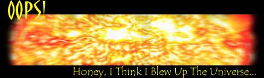

There's
a fuel supply that is costless, unlimited and that gives off no pollution at
all when you use it. There's just one minor problem. When you try to use it,
you may accidentally blow up part of the Universe.
And
explaining what went wrong isn't even simple. We're talking quantum physics here: the
physics of the vanishingly small building blocks that make up all matter in
the Universe.
In
quantum physics, everything is totally different from daily life. Quantum
particles can be in two places at the same time, and can behave both like
waves and particles. In fact, when you hear a quantum physicist say
`particles', don't think of little, round balls. Quantum `particles' are
better compared with tones of music: they're definitely there, but you can't
see them or catch them.
One
of the most mind-boggling properties of quantum particles is that they
come into existence out of nowhere. Suck every molecule of air out of a
bottle, making it completely vacuum -- and quantum particles will still be
there. They pop up in pairs out of nowhere. And within a tiny fraction of a
second, they merge together and -- zzzip! -- they're gone.
It
is precisely this odd `quantum vacuum' that may one day open the door to a
very new source of energy. Suppose you're able to snatch some of those
out-of-nowhere particles away. Admittedly, you'll have to be REALLY fast. But
if you do succeed, you'll have harvested particles out of nowhere. And since
matter and energy are basically the same stuff (according to Einstein's E=mc2),
you'll have energy out of nowhere!
The
advantages would be unimaginable.
Here's an energy source that never runs out, is everywhere around, is
extremely cheap, and causes no pollution whatsoever.
But then again, there is a small, but alarming risk. There may be simply energy too much. Mining the quantum vacuum might bring about an unstoppable chain reaction, releasing an ever increasing amount of energy. In fact, no-one knows how much energy will be released: calculations done by physicists give answers anywhere between zero and infinity.
Obviously, too much energy would mean trouble. The explosion could be huge enough to blow apart our entire solar system and everything around it. And of course, infinite energy would bring about infinite destruction, bombing not just a handful of stars, but everything in the entire Universe.
Gladly,
no present-day scientist is capable of mining the quantum vacuum. On the other
hand: one day, there will be. And that day may arrive sooner than you think:
some estimate around 2020 science will be ready. Let's hope physicists
finally have their calculations straightened out by then.
So it's `wait and see'. And talking about `seeing': as the famous science-fiction writer Arthur C. Clarke once pointed out, whenever you see an unexplained burst of energy coming from the cosmos (and there are a lot of them), it may be some alien civilization, blowing itself to kingdom come while experimenting with the quantum vacuum...
 |
 |